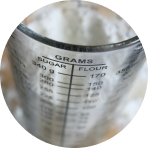
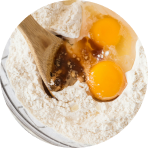

Êtes-vous prêt à débuter la recette ?
Pâte à crêpes
10min
Ingrédients
- 5cl de rhum
- 50g de beurre fondu
- 2 cuillères à soupe d’huile
- 3 cuillères à soupe de sucre
- 300g de farine
- 3 œufs entiers
- 60cl de lait
Équipements
- 1 louche
- 1 fouet
- 1 cuillère en bois
- 1 poêle à crêpes
- 1 saladier
- 1 balance

Étape 1
Mettre la farine dans une terrine et former un puits.

Étape 2
Y déposer les œufs entiers, le sucre, l’huile et le beurre.